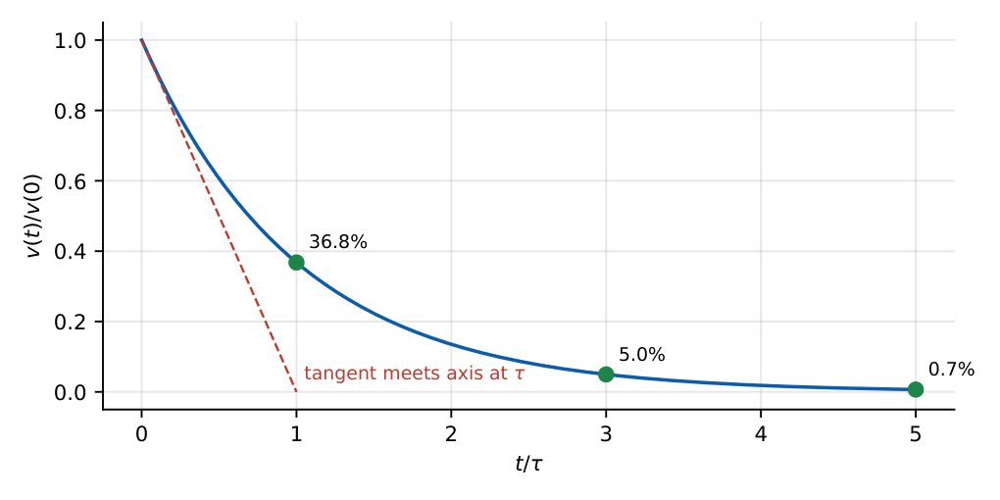
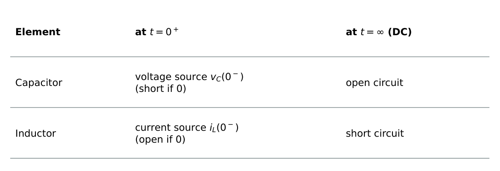
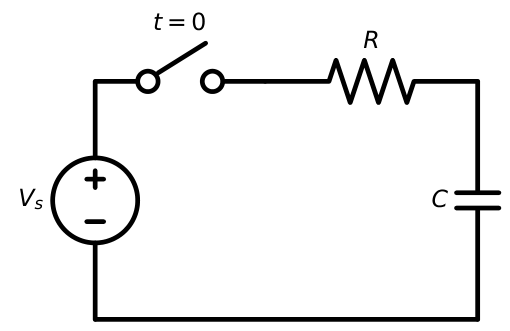
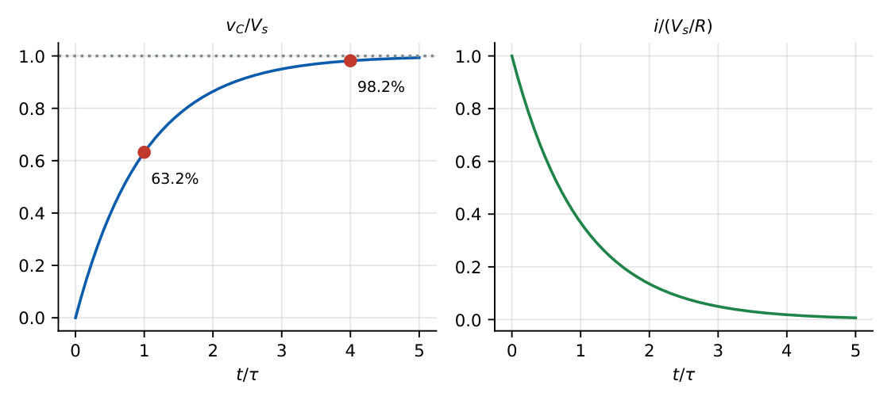
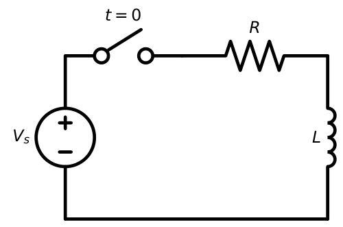
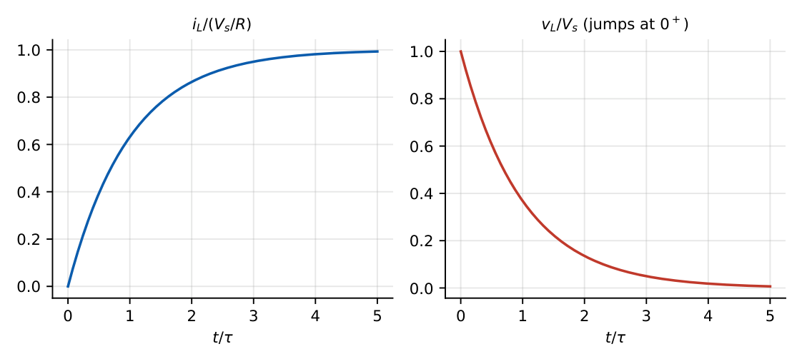
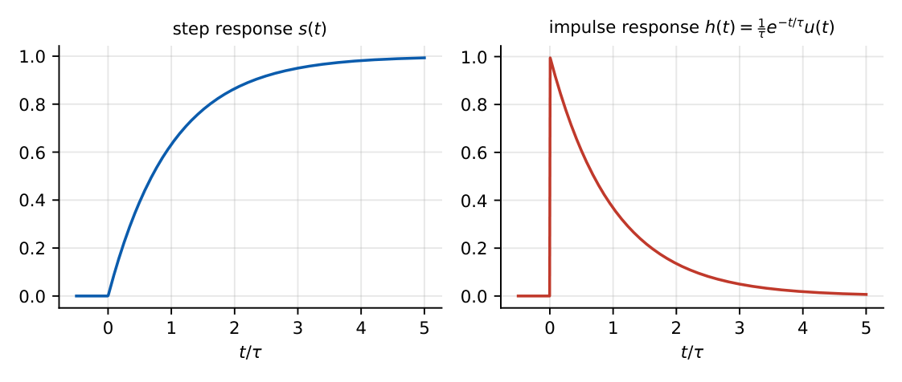
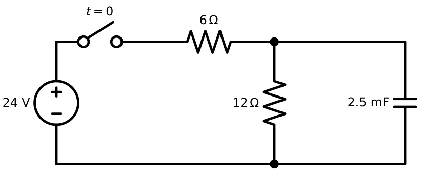
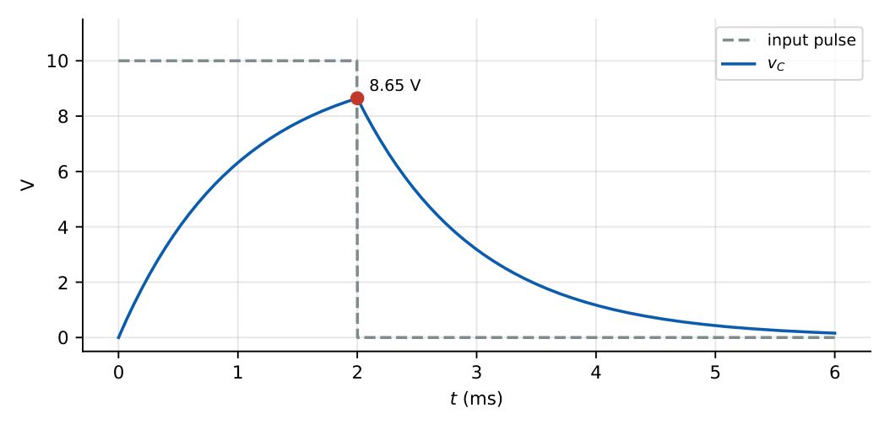

First-Order Circuits
In this chapter
Switching problems: find \(x(0^+)\), \(x(\infty)\) and \(\tau\), then write the answer. Time constants, initial conditions of L and C, energy in discharge, step and impulse response of RC/RL. This is a 1–2 mark question every year.
9.1 Natural response
A first-order circuit contains one energy-storage element (L or C) and resistors. With no source (\(x_{in}=0\)) the stored energy decays through the resistance: the natural (source-free, zero-input) response.
For an RC circuit: \(RC\dfrac{dv}{dt}+v=0\Rightarrow v(t)=v(0)\,e^{-t/\tau}\), \(\tau=R_{eq}C\).
For an RL circuit: \(L\dfrac{di}{dt}+Ri=0\Rightarrow i(t)=i(0)\,e^{-t/\tau}\), \(\tau=L/R_{eq}\).
\(R_{eq}\) is the Thevenin resistance seen by the storage element with independent sources zeroed.

9.2 Forced response
With a DC source the particular (forced) solution is the constant final value \(x(\infty)\); with a sinusoidal source it is the phasor steady state.
9.3 Complete response
\(x(t)=x(\infty)+\left[x(0^+)-x(\infty)\right]e^{-t/\tau},\qquad t\ge0.\)
The same equation works for any voltage or current in a first-order DC circuit: find (i) \(x(0^+)\), (ii) \(x(\infty)\), (iii) \(\tau\).
9.4 Initial conditions
- \(v_C(0^+)=v_C(0^-)\), \(i_L(0^+)=i_L(0^-)\) (energy cannot change instantaneously).
- All other quantities (\(i_C\), \(v_L\), resistor voltage/currents) can jump at \(t=0\).
- Equivalent circuit at \(t=0^+\): capacitor \(\to\) voltage source \(v_C(0^-)\) (short if \(0\)); inductor \(\to\) current source \(i_L(0^-)\) (open if \(0\)).
9.5 Final-value behaviour
At \(t\to\infty\) in DC: capacitor \(\to\) open circuit, inductor \(\to\) short circuit. Then solve a resistive circuit to get \(x(\infty)\).

9.6 RC circuits

Charging from \(v_C(0)=0\) through \(R\) from a source \(V_s\): \(v_C(t)=V_s(1-e^{-t/RC})\), \(i(t)=\dfrac{V_s}{R}e^{-t/RC}\).

\(V_s=12\) V, \(R=2\) k\(\Omega\), \(C=5\ \mu\)F: \(\tau=10\) ms. \(v_C(20\text{ ms})=12(1-e^{-2})=10.38\) V. Time to reach \(6\) V: \(t=\tau\ln2=6.93\) ms (half-way delay \(=0.693\tau\)).
\(v_C(0)=10\) V, \(R=1\) k\(\Omega\), \(C=1\ \mu\)F: \(\tau=1\) ms, \(v_C=10e^{-t/\text{1 ms}}\); at \(3\) ms \(v_C=0.498\) V. Energy dissipated in \(R\) (total) \(=\tfrac12CV^2=50\ \mu\)J.
9.7 RL circuits

\(i_L(t)=\dfrac{V_s}{R}(1-e^{-Rt/L})\), \(v_L(t)=V_se^{-Rt/L}\).

\(V_s=10\) V, \(R=5\ \Omega\), \(L=0.5\) H: \(\tau=0.1\) s, \(i=2(1-e^{-10t})\). At \(t=0.1\) s: \(2(1-0.368)=1.264\) A. Time for \(i=1\) A: \(t=0.1\ln2=69.3\) ms.
\(L=2\) H carries \(3\) A and is suddenly connected across \(R=6\ \Omega\) (source removed): \(\tau=L/R=1/3\) s, \(i=3e^{-3t}\). At \(t=0^+\): \(v_R=6\times3=18\) V, so \(v_L=-18\) V: it jumps from \(0\) (before switching, \(L\) was shorted in DC).
9.8 Time constant
| \(t/\tau\) | \(0.693\) | \(1\) | \(2.2\) (10–90% rise) | \(3\) | \(5\) |
|---|---|---|---|---|---|
| fraction of change done | \(50\%\) | \(63.2\%\) | \(80\%\) | \(95\%\) | \(99.3\%\) |
Rise time (10% to 90%) \(=2.2\tau\). Settling within \(2\%\) takes \(\approx4\tau\).
9.9 Step response
For the unit step input \(u(t)\) and zero initial state, the output across the capacitor is \(s(t)=(1-e^{-t/RC})u(t)\).
9.10 Impulse response
The impulse response is the derivative of the step response: \(h(t)=\dfrac{ds}{dt}=\dfrac1{RC}e^{-t/RC}u(t)\) (voltage across \(C\) for \(v_i=\delta(t)\)). Physically the impulse deposits charge \(1/R\) on \(C\), so \(v_C(0^+)=1/RC\).

9.11 Switching circuits
A \(24\) V source feeds \(R_1=6\ \Omega\) in series; \(R_2=12\ \Omega\) is in parallel with \(C=2.5\) mF. The capacitor initially holds \(4\) V and the switch closes at \(t=0\) (Figure 9.8).
\(v_C(0^+)=4\) V. \(v_C(\infty)=24\times\dfrac{12}{18}=16\) V. \(R_{eq}=6\parallel12=4\ \Omega\), \(\tau=4\times2.5\text{ mF}=10\) ms.
\(v_C(t)=16+(4-16)e^{-100t}=16-12e^{-100t}\) V. At \(t=10\) ms: \(16-12(0.368)=11.59\) V.

RC with \(\tau=1\) ms is driven by a \(10\) V pulse of width \(2\) ms. During the pulse \(v_C=10(1-e^{-t/\tau})\); at \(t=2\) ms \(v_C=8.65\) V. Afterwards \(v_C=8.65e^{-(t-2\text{ ms})/\tau}\) (at \(3\) ms: \(3.18\) V).

9.12 Initial and final value techniques
1. Draw the circuit at \(t=0^-\) (steady state, C open, L short) to get \(v_C(0^-)\), \(i_L(0^-)\).
2. Draw the circuit at \(t=0^+\) with C as a source \(v_C(0^-)\), L as a source \(i_L(0^-)\); find the wanted \(x(0^+)\).
3. Draw the circuit at \(t=\infty\) (C open, L short); find \(x(\infty)\).
4. \(\tau=R_{Th}C\) or \(L/R_{Th}\) with the switch in its new position.
5. Write \(x(t)=x(\infty)+[x(0^+)-x(\infty)]e^{-t/\tau}\).
Q1. The time constant of a series RL circuit is (A) \(RL\) (B) \(L/R\) (C) \(R/L\) (D) \(1/RL\).
Q2. In DC steady state an inductor behaves as (A) open circuit (B) short circuit (C) resistor (D) current source of zero value only.
Q3. An uncharged capacitor is connected through \(R\) to a step voltage \(V\). Just after \(t=0\), the capacitor current is (A) \(0\) (B) \(V/R\) (C) \(\infty\) (D) \(V/2R\).
Answers: Q1 (B). Q2 (B). Q3 (B): \(v_C(0^+)=0\), so the full source appears across \(R\).
Q4. In the switching example, \(v_C\) at \(t=20\) ms is (A) \(12.0\) V (B) \(14.4\) V (C) \(16.0\) V (D) \(10.4\) V.
Q5. In the RL example (\(10\) V, \(5\ \Omega\), \(0.5\) H) the time at which \(i=1\) A is (A) \(69.3\) ms (B) \(100\) ms (C) \(50\) ms (D) \(138.6\) ms.
Answers: Q4 (B): \(16-12e^{-2}=14.38\). Q5 (A): \(2(1-e^{-10t})=1\), \(t=0.0693\).
Q6. A capacitor \(v_C(0)=10\) V discharges through \(\tau=1\) ms. Its voltage at \(t=3\) ms is V (two decimals).
Q7. A \(100\ \mu\)F capacitor charged to \(20\) V is discharged fully through a resistor. The energy dissipated is mJ.
Answers: Q6: \(10e^{-3}=0.50\) V. Q7: \(\tfrac12CV^2=\tfrac12(10^{-4})(400)=20\) mJ.
Q8. Which of the following can change instantaneously at a switching instant? (A) capacitor voltage (B) inductor current (C) capacitor current (D) inductor voltage.
Answers: Q8: (C), (D).
(i) Using the old circuit’s resistance for \(\tau\) after the switch moves. (ii) Assuming \(i_C(0^+)=i_C(0^-)\) or \(v_R\) continuous. (iii) \(\tau=RC\) where \(R\) is not the Thevenin resistance seen by the capacitor. (iv) Applying \(\frac12CV^2\) to the energy from the source (the source supplies \(CV^2\) during charging, half of it lost in \(R\)). (v) Forgetting that a series inductor with an ideal current source is not a first-order decay.
T1. A \(4\) mH inductor carries \(5\) A and is switched across \(10\ \Omega\). Find \(v_L(0^+)\) and \(i(t)\).
T2. A capacitor charges through \(R\) from \(0\) to \(V\). What fraction of the source energy \(CV^2\) is stored?
Answers: T1: \(v_L(0^+)=-50\) V, \(\tau=0.4\) ms, \(i=5e^{-2500t}\). T2: \(\tfrac12CV^2/CV^2=50\%\).
- \(x(t)=x(\infty)+[x(0^+)-x(\infty)]e^{-t/\tau}\). \(\tau_{RC}=R_{Th}C\), \(\tau_{RL}=L/R_{Th}\).
- \(v_C\), \(i_L\) continuous. C: \(t=\infty\) open; L: \(t=\infty\) short. \(t=0^+\): C\(\to\)source, L\(\to\)source.
- \(63.2\%\) at \(\tau\), \(95\%\) at \(3\tau\), \(99.3\%\) at \(5\tau\); \(t_{50\%}=0.693\tau\); \(t_r=2.2\tau\).
- Step \(s=(1-e^{-t/\tau})\), impulse \(h=\frac1\tau e^{-t/\tau}\) (RC low-pass).
- Energy stored \(\tfrac12CV^2\), \(\tfrac12LI^2\).